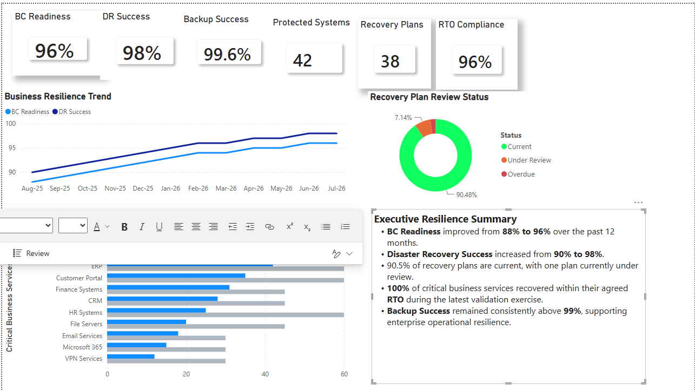

Executive Business Resilience Dashboard
Business Continuity • Disaster Recovery • Operational Resilience

Executive Business Resilience Dashboard – Representative Executive Reporting View
Executive Summary
This executive dashboard provides leadership visibility into business continuity readiness, disaster recovery performance, recovery plan governance, backup reliability, and critical service recovery. It demonstrates how resilience metrics can be presented to support executive decision-making, operational preparedness, and organizational resilience.
Business Value
Business resilience is a critical capability for ensuring organizational continuity during disruptive events. This dashboard provides executives with insight into business continuity readiness, disaster recovery effectiveness, recovery plan governance, backup reliability, and critical service recovery performance.
By consolidating resilience, recovery, and governance metrics into a single executive view, leadership teams can assess organizational preparedness, monitor resilience maturity, validate recovery capabilities, and support informed risk-based decision-making.
Key Capabilities Demonstrated
- Executive Business Continuity KPIs
- Disaster Recovery Performance Monitoring
- Recovery Plan Governance
- Critical Service Recovery Analysis
- Backup Success Monitoring
- Business Resilience Trend Analysis
- Executive Resilience Reporting
Disclaimer: This dashboard uses representative sample data created exclusively for portfolio demonstration purposes. It does not contain confidential information or data from any employer or client.